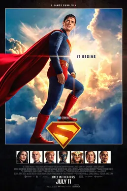

The genetics
Genetics appears in two ways. Luthor's secret weapon, Ultraman, is a clone of Superman created by Luthor and controlled remotely, a misuse of Kryptonian genetics for a billionaire's personal grudge. And the Kryptonian parents' message, urging their son to rule Earth and father many children to restore their race, frames Superman's heritage as a kind of biological destiny with eugenic overtones. The film rejects this determinism: Jonathan Kent tells Clark that his choices and actions determine who he is, not his origins, and the identical-but-opposite clone underlines the point. Luthor, a technologist rather than a geneticist, is portrayed as envious and amoral, using science, prisoners and children as tools. As in most superhero films, the cloning is not explained; in reality, a clone shares its donor's genome but grows from an embryo and develops as a separate individual, with no inherited memories or loyalties.
How genetics is portrayed
- Overall portrayal of genetics
- negative Cloning is a villain's weapon, and the film also rejects biological destiny: the parents' message urging Kal-El to rule and repopulate his race is overruled by Jonathan Kent's lesson that choices, not origins, define him; genetics comes across as misused or as a deterministic trap.
- Outcome of the genetic intervention
- negative The clone defeats Superman twice, helps turn the public against him and fights him during the attack on Metropolis before being knocked into a black hole.
- Lex Luthor / LuthorCorp
- villain Aim: power, revenge (negative). Driven by envy of Superman's admiration, the billionaire creates Ultraman, a remote-controlled clone of Superman, and uses him as the 'Hammer of Boravia' to defeat and discredit the hero; the film stages him as an amoral villain who is exposed and arrested.
The story
Superman stops the nation of Boravia from invading its neighbour Jarhanpur, but is then defeated by a mysterious metahuman, the "Hammer of Boravia", secretly controlled by the billionaire Lex Luthor. Luthor breaks into the Fortress of Solitude, restores the damaged second half of the message left by Superman's Kryptonian parents and broadcasts it: in it, they urge their son to conquer Earth and take many wives to restore the Kryptonian race. Public opinion turns against Superman, who surrenders and is imprisoned by Luthor in a pocket universe. With the help of Lois Lane, Mister Terrific and the metahuman Metamorpho, he escapes, and his adoptive father tells him that his choices, not his birth parents' message, define who he is. Superman returns to stop a rift that Luthor has opened in Metropolis and learns that the Hammer, Ultraman, is a clone of himself created by Luthor. He defeats him, and Luthor's schemes are exposed.